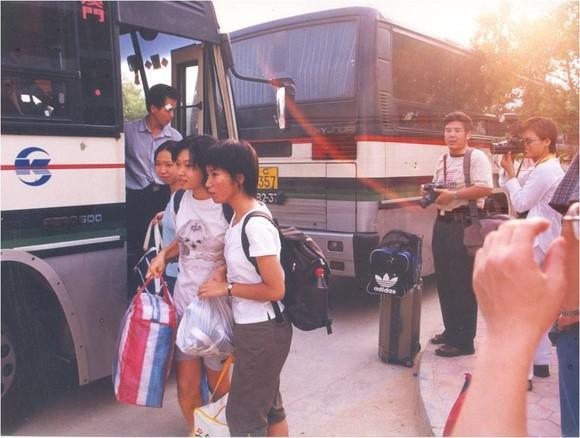

2000年6月5日，广东省边防局、珠海市边防分局有关领导到珠海校区商谈有关中大师生出入珠海特区检查站享受珠海市民同等对待的具体事宜。这一优惠政策为后来珠海特区检查站全面开放提供了先例
2000年7月20日，《中山大学珠海校区学生团体人身保险协议书》签订，改变了学生依靠国家有限的医疗费的旧体制，开创了广东高校的一个创举
2000年8月5日，榕园生宿舍区落成，黄达人校长、余荣霭副市长及投资企业丹田集团董事长高志东先生等为学生宿舍揭幕
2000年8月15日，珠海校区正式通电
2000年9月5日，珠海电信局举行珠海校区通信建设圆满完成

2000年9月6日下午，中山大学珠海校区迎来了开辟历史的第一批广州籍学生到达，众多记者也已等候着他们见证了这一历史时刻。他们将接受一天的培训，然后投入新生接待工作。
2000年9月6日下午，中山大学珠海校区迎来了开辟历史的第一批广州籍学生到达，众多记者也已等候着他们见证了这一历史时刻。他们将接受一天的培训，然后投入新生接待工作。
2000年9月9日，3300名中大本科新生拥进了珠海校区。珠海人第一次听到了在当地响起的大学铃声。 珠海人圆了8年的大学梦，还是一个名牌大学。
在中大珠海校区的落成庆典上，教育部副部长周远清称赞中山大学珠海校区是“中国高等教育的一个杰作”。
5年内，珠海校区的在校生将达到1万名。
中大将在珠海校区设立海洋学院和旅游学院，在海洋、旅游、虾鱼病虫害等方面与珠海合作，为发展当地经济服务。
珠海一次性给中大投入几个亿，数目是不小；但如果自己办大学，以后几十年、几百年要投入多少资金?
中大为珠海培养人才，给予珠海科技发展强大的支持，这个价值无法估量。
只说一件小事。9月9日，珠海校区3300名新生入学，却来了9000多名亲人“护送”，一时间珠海宾馆爆满。以后每年来一次“爆满”，给珠海送来多少钱啊。
再想想黄龙云说的“不求所有，但求所在”，想想余荣霭说的“将军赶路不追小兔”，珠海人的远见、气魄、精明都看出来了。
珠海校园真说得上是美丽宽广。群山连绵，还有两座水库，环抱一湾海水。从海上到山上，中大师生可在校园作“一日游”。
一夜之间，中山大学不花一分钱使自己的校园扩大3倍，为新世纪的发展打下了非常好的发展基础，此举泽被后世，世世代代将在中大校园传为佳话。这到底是珠海为中大送的厚礼呢，还是中大为珠海送的厚礼呢？
10月31日至11月1日，中共中央政治局委员、广东省委书记李长春，广东省省长卢瑞华与其他领导同志在珠海市召开现场办公会期间，参观考察了中山大学的珠海校区。
省委领导在办公会上对中大珠海模式给予高度评价，并指出：要大力兴办产学研基地，广纳人才，增强科研开发力量，要办好中山大学珠海校区以及其他几所国内名校的珠海校区，使之成为广东省高等教育对外交流与合作的窗口、珠海发展高新技术产业的推进器、培养人才的摇篮。